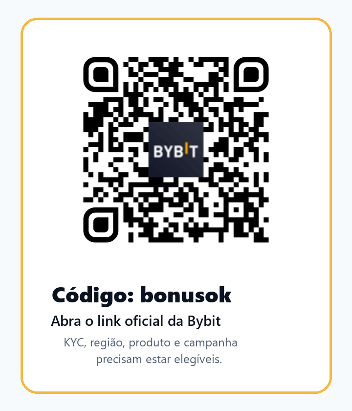

Resposta rápida: como usar o código bonusok sem pular a parte importante
Se você chegou aqui pesquisando “código de indicação Bybit”, “código de afiliado Bybit”, “código de convite Bybit”, “cupom Bybit” ou “bonusok Bybit Brasil”, a resposta curta é simples: o caminho oficial que usamos é https://partner.bybit.com/b/bonusok e o código visível é bonusok. A resposta útil, porém, é um pouco mais cuidadosa: antes de depositar, confirme se sua conta, sua residência real, o produto que você pretende usar e a campanha que aparece no Rewards Hub estão elegíveis.
Este material foi escrito para traders ativos no Brasil que não querem apenas “pegar bônus”. O foco é decidir se a Bybit faz sentido como ambiente de execução, roteamento de ordens, subcontas, API, RPI/SBE, spot, produtos com ouro tokenizado e campanhas pontuais. Para esse perfil, um código de indicação só converte bem quando ajuda a abrir a conta no fluxo correto, deixa claro o disclosure de afiliado e reduz o risco de uma conta criada com expectativa errada.
Por que o Brasil precisa de uma página própria, e não só uma tradução
O trader brasileiro costuma misturar três necessidades: acesso a liquidez global, disciplina fiscal/local e uma experiência operacional que aguente volatilidade. Essa combinação é diferente de uma página genérica para Portugal ou para todos os países lusófonos. No Brasil, a pergunta não é somente “qual é o bônus?”. A pergunta real é: “consigo operar com KYC verdadeiro, entender as obrigações locais, controlar risco por conta/subconta e medir se a execução compensa?”
Ao preparar esta página em 15 de julho de 2026, a página oficial de países restritos da Bybit não colocava o Brasil na lista de jurisdições proibidas, mas isso não transforma disponibilidade em garantia permanente. A Bybit pode mudar regras, produtos e campanhas. Além disso, o fato de o acesso ser possível não significa que todo produto esteja disponível para todo usuário. Derivativos, campanhas, Earn, promoções de par de trading e recursos institucionais podem ter regras próprias.
Também há a camada brasileira de impostos e reporte. A própria Bybit publica uma página de informações fiscais para usuários no Brasil e lembra que podem existir obrigações locais relacionadas a criptoativos. Este texto não é aconselhamento jurídico, tributário ou financeiro. A ideia é colocar o aviso onde o trader realmente toma decisão: antes de registrar, antes de depositar e antes de mover volume relevante.
Para afiliado, essa abordagem parece menos agressiva, mas tende a atrair melhor qualidade. Um clique de alguém que entende elegibilidade, risco e custo de execução vale mais do que dez cadastros curiosos que abandonam antes do KYC. O objetivo é trazer traders que já operam ou estudam operar com método: pessoa que compara spread, slippage, funding, latência, regras de bônus, histórico de retirada e controles de risco.
O ângulo deste material: execution/risk cockpit para trader ativo
O material português antigo da nossa base já cobria o código de referido Bybit de forma ampla para Brasil e Portugal. Esta página nova não repete essa promessa geral. O foco aqui é um funil mais estreito: traders brasileiros que querem usar a Bybit como cockpit de execução, com API, RPI/SBE, subconta de IA isolada, leitura de campanhas e checagem de risco antes de aumentar tamanho.
Isso conversa com três dores reais. A primeira é execução: quando o mercado acelera, a diferença entre um fluxo manual confuso e um processo com ordem, limite, stop, API e métrica de slippage pode custar caro. A segunda é isolamento: testar ferramenta nova com a conta principal inteira exposta é uma má prática. A terceira é elegibilidade: bônus, campanhas e produtos podem parecer simples na tela, mas dependem de região, KYC, depósito, volume, tipo de conta, prazo e regras contra abuso.
O código bonusok entra como porta de entrada rastreável, não como argumento de investimento. Você abre o link oficial, verifica se o código ficou aplicado, lê Rewards Hub, confirma KYC e região, faz um teste pequeno de depósito/retirada se decidir continuar, e só então avalia se faz sentido usar recursos mais avançados. Esse processo reduz arrependimento e ajuda a filtrar usuários que têm chance de virar traders ativos de verdade.
API, RPI e SBE: o que atrai um trader mais sofisticado
A Bybit vem destacando recursos de execução que conversam com traders sistemáticos e desks menores. O anúncio de RPI para ordens API taker explica que usuários com acesso podem optar por liquidez RPI usando o parâmetro rpiTakerAccess=true, enquanto o padrão permanece desligado. Isso é importante porque um trader ativo não deve assumir que todo recurso está ligado por padrão ou disponível para sua conta. Ele precisa ler a documentação e fazer teste controlado.
Já a documentação SBE da Bybit descreve uma interface binária voltada a payloads menores, layouts determinísticos e precisão de microssegundos em determinados canais. Em termos simples: não é uma função para o usuário que acabou de comprar o primeiro USDT. É um assunto para quem mede custo operacional, throughput, processamento local e comportamento do sistema durante janelas de alta volatilidade.
O ponto comercial aqui é forte: quem pesquisa RPI, SBE, API order entry ou latência não é um visitante qualquer. É um usuário com maior probabilidade de negociar com frequência, comparar exchanges e gerar volume real se encontrar uma plataforma que funcione. Por isso esta página usa “código de indicação Bybit” junto com “execução API” e “RPI/SBE”: não por keyword stuffing, mas porque essa é uma intenção de busca mais qualificada.
Mesmo assim, a página evita prometer performance. API ruim, estratégia mal testada, alavancagem excessiva ou erro operacional podem destruir conta. A forma responsável de usar uma exchange é começar pequeno, logar cada ordem, comparar preço esperado e executado, revisar taxas, incluir custo de retirada e não confundir campanha promocional com edge de mercado.
- Abra o link oficial e confirme que o código bonusok aparece no fluxo certo.
- Conclua KYC com residência verdadeira; não use VPN, endereço falso ou documentos inconsistentes.
- Leia o Rewards Hub dentro da sua conta e salve a regra exata antes de depositar.
- Se for operar via API, comece em tamanho mínimo, com limites e logs.
- Compare execução manual, API comum, RPI quando disponível e SBE somente se você realmente precisa desse nível.
- Tenha um plano de saída: retirada, redução de posição, falha de API, excesso de volatilidade e manutenção da plataforma.
AI Subaccount: isolamento de risco é mais convincente que hype de IA
A Bybit anunciou AI Subaccount como um framework de execução em que ferramentas de IA podem operar em uma subconta isolada, com contenção de fundos e controles de risco. A forma responsável de apresentar isso para o Brasil não é “deixe a IA ganhar dinheiro”. A forma útil é: se você for testar automação, sinais, agente ou robô, isole capital, defina limite e trate como experimento.
Esse é um ótimo gancho de aquisição porque traders ativos gostam de testar. Mas o teste precisa ter cerca. Uma subconta ajuda a separar histórico, chaves, permissões e saldo. Ainda assim, isolamento não elimina risco de mercado, erro de lógica, falha de API, vazamento de credencial, liquidação, slippage ou execução fora do plano. O usuário precisa entender que a ferramenta pode ampliar disciplina ou ampliar erro, dependendo da configuração.
Em um funil de referral, a mensagem correta é: entre pelo código bonusok, confira se a conta está elegível, leia as regras oficiais, e só depois avalie recursos avançados. Se você ainda não consegue explicar sua estratégia em uma página, talvez ainda não deva automatizar. Se consegue, use subconta, capital pequeno e checklist de desligamento.
Spot Trading Arena e XAUT/USDT: oportunidade com prazo, não promessa eterna
Um dos motivos para publicar esta página agora é que a Bybit anunciou uma Spot Trading Arena com período de 10 a 24 de julho de 2026 e pool de recompensas divulgado de 200.000 USDT, incluindo pares elegíveis como XAUT/USDT. Isso pode interessar ao trader brasileiro que acompanha ouro tokenizado, stablecoins, pares spot e competição de volume. Mas a campanha tem prazo, regras e elegibilidade; por isso ela aparece aqui como opportunity check, não como promessa de bônus.
O melhor uso desse gancho é levar o usuário para uma verificação honesta: a campanha ainda está ativa? Minha região aparece como elegível? Meu KYC conta? O volume exigido faz sentido para meu tamanho? A recompensa esperada justifica spread, taxa, risco de preço e custo de oportunidade? Se a resposta for “não sei”, o trader deve ficar no estudo, não no FOMO.
Para SEO, essa seção adiciona frescor sem transformar a página em peça descartável. Quando a campanha acabar, o material continua útil porque o eixo principal é execução e risco; a data da campanha será revisada no próximo follow-up. Esse é o equilíbrio: notícia atual para atrair atenção, mas estrutura evergreen para capturar busca de código de indicação, API, RPI, SBE e Bybit Brasil.
Como confirmar se o código foi aplicado antes de depositar
A etapa mais importante é simples e muitas vezes ignorada: não deposite primeiro para perguntar depois. Abra o link oficial, conclua o cadastro, veja se o código bonusok ficou associado à conta e confira as regras no Rewards Hub. Se a tela não deixa claro, entre em contato com suporte oficial antes de mover dinheiro relevante.
Use uma rotina parecida com auditoria de execução. Tire nota do horário, link usado, país/residência escolhidos, status de KYC, moeda de depósito, campanha vista, requisito de volume e prazo. Isso evita confusão e melhora a qualidade da decisão. Se a oferta for “até” determinado valor, entenda que “até” significa condicional, não garantia.
Se você já tem conta Bybit, pode não conseguir aplicar outro código depois. Se usa documentos de outra jurisdição ou reside fora do Brasil, a análise muda. Se pretende operar derivativos, Earn, produtos com RWA, opções ou campanhas específicas, cada produto pode ter restrições próprias. Não use bypass, VPN, falsa residência ou múltiplas contas para contornar regra; além de antiético, isso pode causar bloqueio, perda de recompensa ou problema maior.

Risco, imposto e suitability: a parte que separa trader de caçador de bônus
No Brasil, cripto não é um videogame fora do mundo real. Pode haver obrigação de declarar, apurar ganho, manter histórico de transações e entender regras locais. A Lei 14.478/2022 criou marco legal para prestadores de serviços de ativos virtuais no país, e a regulação continua evoluindo. Além disso, exchanges globais podem publicar informações fiscais, mas a responsabilidade final de checar sua situação é sua.
Essa seção existe porque queremos atrair traders ricos e ativos, sim, mas não qualquer tráfego. O usuário de maior valor costuma valorizar clareza. Ele quer saber onde clica, quais riscos assume, que documentação guarda, qual custo mede e quando não deve operar. A longo prazo, esse tipo de usuário tende a permanecer mais tempo, usar mais produtos e gerar volume mais saudável.
Não opere alavancado por causa de bônus. Não aumente volume para perseguir ranking se o risco não cabe no seu plano. Não use capital de emergência. Não use automação sem limite. Não confunda ouro tokenizado com ouro físico sob sua custódia. Não trate Earn, RWA, campanhas ou subcontas como substitutos de controle de risco.
A Bybit pode ser útil para uma rotina de execução, mas a utilidade depende do seu perfil, país, KYC, produto e disciplina. A página tem CTA porque é material de afiliado; ela também tem advertência porque aquisição de traders bons precisa de confiança.
Fontes oficiais verificadas
As fontes abaixo foram usadas para calibrar a página em 15 de julho de 2026. Elas devem ser abertas novamente antes de qualquer decisão financeira, porque termos de serviço, elegibilidade, campanhas e regras fiscais mudam.
- Bybit Service Restricted Countries
- Bybit Rewards Hub FAQ
- Bybit AI Subaccount announcement
- Bybit RPI liquidity for API taker orders
- Bybit SBE API documentation
- Bybit Spot Trading Arena announcement
- Bybit Brazil tax considerations page
- Lei 14.478/2022, Presidência da República